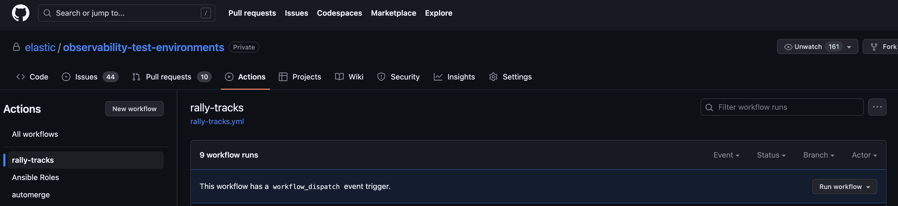
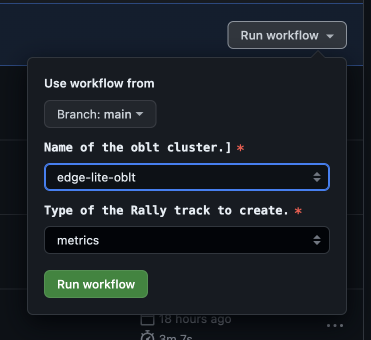
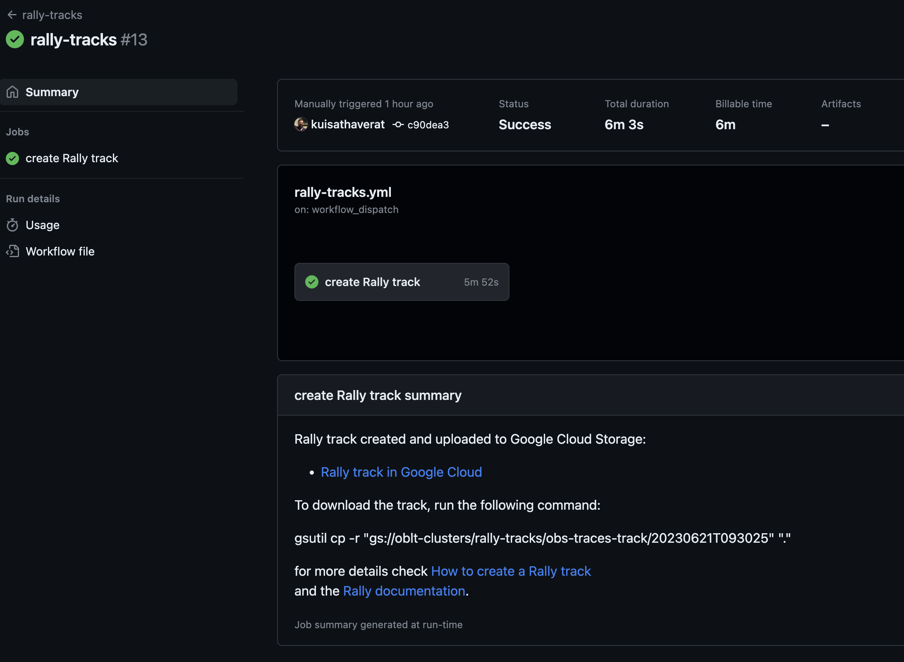
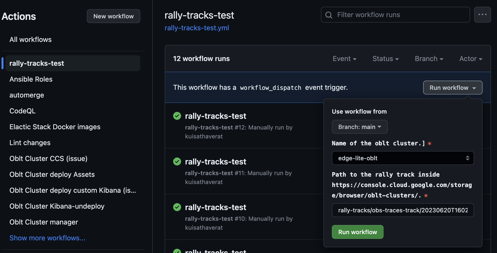
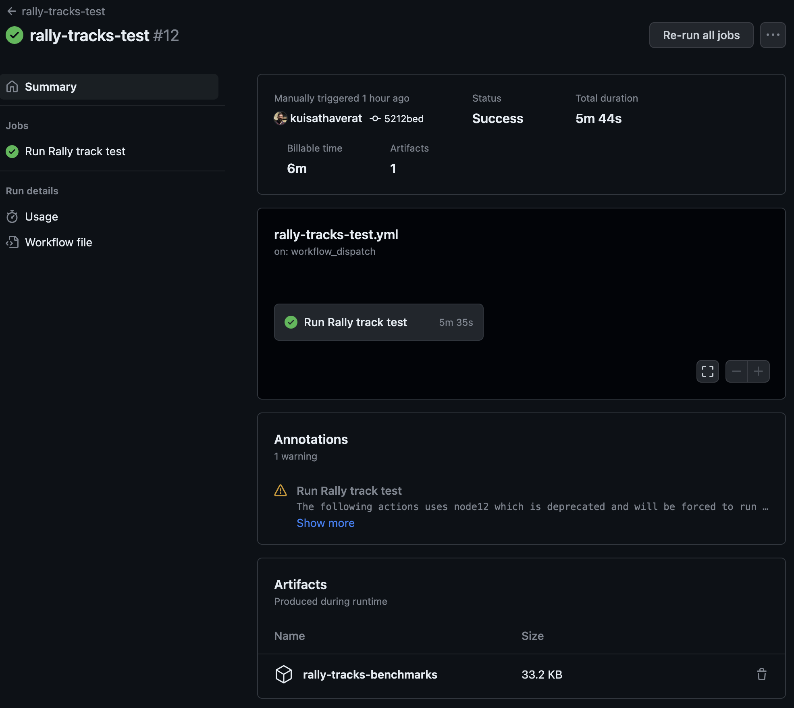
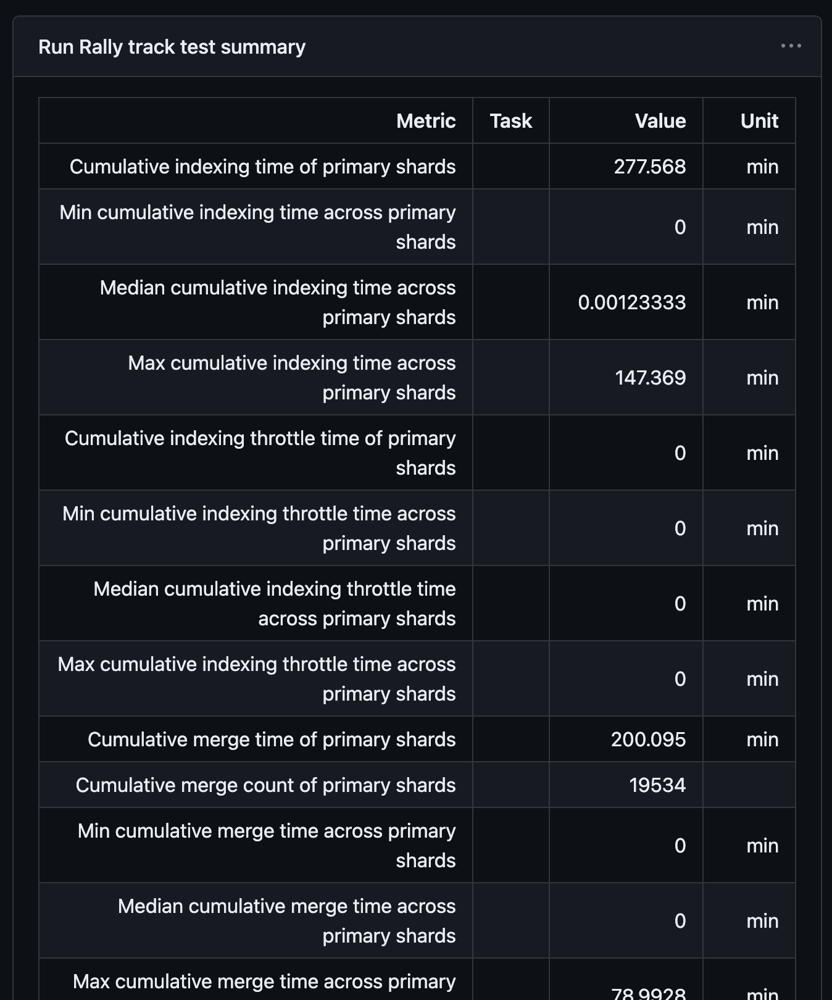
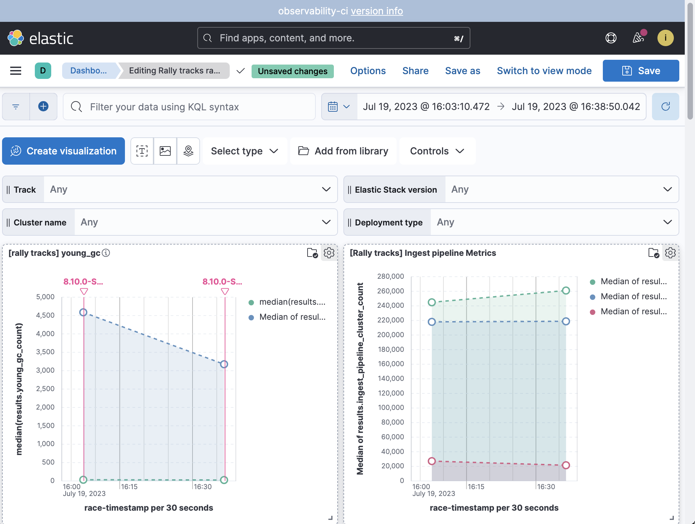

Rally tracks¶
Rally is a tool for benchmarking Elasticsearch. Our oblt clusters are a good source of data to perform benchmarks on. So joining both, we can use Rally to benchmark our clusters with a big amount of data.
Sensible data
Rally tracks can contain sensitive data, so they are not public.
We have three clusters created only for benchmarking:
These three clusters are recreated every day at 20:00 UTC by the workflow Oblt Cluster update scheduled
Every day at 23:00 UTC, the workflow rally-tracks-test-daily is launched to execute the three rally track races on the three benchmarks clusters and report the results.
How to create a rally track¶
Using the CI¶
The CI can do it for you, and it is the recommended way to create a rally track. The process to create a rally track can take a long time, so it is not recommended to do it manually. To create a rally track using the CI you have to run the rally-track workflow.

This workflow has a button run workflow that you have to click to run the workflow.
After clicking the button, you will see the parameters of the workflow.
- branch: The branch of the observability-test-environments repository to use, it is only for develop the workflow and make changes on it.
- Name of the oblt cluster: The oblt cluster to use as source of the data.
- Type of rally track: The type of rally track to create, it can be
traces,metricsorlogs.

Finally when the CI create the rally track and upload the data to the Bucket you will see a link to the rally track in the summary of the workflow.

Rally size
The oblt clusters have a large amount of data the creation of a rally track could take hours. It would depend on the track selected and the amount of data on the cluster for that track.
Rally tracks for metrics
The rally tracks for metrics are not generated properly yet. They need some manual changes to make it work.
Manually¶
To create a rally track, you can use the observability test environments repository. In this repository we have the same Ansible playbook is run in the CI to create the rally track. To create a rally track you have to select the oblt cluster you want as source of the data, and run the following command:
To create a rally track for traces
CLUSTER_NAME=edge-lite-oblt
make -C "environments/users/robots/${CLUSTER_NAME}" tasks-rally-track-traces
To create a rally track for metrics
CLUSTER_NAME=edge-lite-oblt
make -C "environments/users/robots/${CLUSTER_NAME}" tasks-rally-track-metrics
To create a rally track for logs
CLUSTER_NAME=edge-lite-oblt
make -C "environments/users/robots/${CLUSTER_NAME}" tasks-rally-track-logs
Rally tracks for metrics
The rally tracks for metrics are not generated properly yet. They need some manual changes to make it work.
Fix a metrics rally track¶
The rally tracks for metrics are not generated properly yet.
They need some manual changes to make it work.
After creating a rally track for metrics you will need to execute a Python script to fix the files, fix the track.json file, and add the ingest pipeline to the track.json.
To fix the files you have to run the following command:
TRACK_FOLDER=~/20230801T164123/obs-metrics
ES_URL=https://edge-lite-oblt.es.us-west2.gcp.elastic-cloud.com:443
ES_USERNAME=elastic
ES_PASSWORD=ThIsIsNoTaReAlPaSsWoRd
TRACK_NAME=obs-metrics
python3 -m venv .venv
source .venv/bin/activate
pip install -r ./ansible/requirements.txt
.ci/scripts/rally-tracks/rally-track-builder.py \
--track-path "${TRACK_FOLDER}" \
--track-name "${TRACK_NAME}" \
--es-url "${ES_URL}" \
--es-password "${ES_PASSWORD}" \
--es-username "${ES_USERNAME}"
Processing time
The process have to sort and recompress all the files, so it could take a long time.
Requirements
The script requires Python 3.9 or higher. It is recommend to have 7zip or pbzip2 installed on your system. You will need jlsort installed on your system.
Upload the rally track to the bucket¶
When we create a rally track locally the rally track is not uploaded to the GCS bucket. To upload the rally track to the bucket you have to run the following command:
LOCAL_FOLDER=./ansible/build/rally-tracks/obs-logs-track/20230718T102712
REMOTE_FOLDER=oblt-clusters/rally-tracks/obs-logs-track/20230718T102712
gsutil cp -r "${LOCAL_FOLDER}" "gs://${REMOTE_FOLDER}"
Access to the rally tracks¶
The rally tracks are uploaded to the oblt-clusters GCS bucket to a folder called rally-tracks.
There are three types of rally tracks, thus we have three folders inside the rally-tracks folder.
obs-traces-trackfor APM traces rally tracksobs-metrics-trackfor metrics rally tracksobs-logs-trackfor logs rally tracks
Every rally track has it own folder inside the rally-tracks folder.
The folder of each track is the ISO 8601 date when the track was created.
It is possible to access to the rally tracks using the google cloud console or using the gsutil command.
Rally tracks on Google cloud console
To download a rally track using gsutil:
REMOTE_FOLDER=oblt-clusters/rally-tracks/obs-traces-track/20230620T124004
gsutil cp -r "gs://${REMOTE_FOLDER}" ~/.rally/tracks
How to execute a rally track race¶
The aim of the rally tracks we generate is to benchmark the oblt clusters. There are two ways to execute a rally tracks race, using the CI or manually. The recommendation is to use the CI, because it is easier and faster. Also the CI will upload the results to the GCS bucket and observability-ci cluster, so you can access to them easily.
Run a race using the CI¶
We have created a workflow to execute the rally tracks in the oblt clusters. This workflow is called rally-tracks-test.

This workflow has a button run workflow that you have to click to run the workflow.
After clicking the button, you will see the parameters of the workflow.
You have to choose the oblt cluster to benchmark and the rally track to use.
The rally track is a link to the rally track in the GCS bucket.
for example for the link gs://oblt-clusters/rally-tracks/obs-traces-track/20230620T160218/obs-traces
the path to the rally track inside the bucket is rally-tracks/obs-traces-track/20230620T160218/obs-traces.
When the workflow finishes, you will have the benchmark results in the summary of the workflow.
there you can download the results using the rally-tracks-benchmarks artifact link.

If you only need to take a look to the results the workflow summary show the esrally report.

Run a race Manually¶
To execute a rally tracks race manually, you can use the observability test environments repository. You have to choose the cluster you want to benchmark and the rally track to use. You must download the rally track to some place in your computer before running the benchmark. Then you have to run the following command:
CLUSTER_NAME=edge-lite-oblt
export TRACK_PATH=~/.rally/tracks/obs-traces-track/20230620T124004
make -C "environments/users/robots/${CLUSTER_NAME}" tasks-rally-test
The rally track race result will be stored in the ./ansible/build/.rally/benchmarks folder.
If you want to upload those result to the GCS bucket you can run the following command:
LOCAL_FOLDER=~/.rally/benchmarks/20230620T124004
REMOTE_FOLDER=oblt-clusters/rally-tracks/benchmarks/20230620T124004
gsutil cp -r "${LOCAL_FOLDER}" "gs://${REMOTE_FOLDER}"
Access to benchmark results¶
The benchmark results are uploaded to the oblt-clusters GCS bucket to a folder called rally-tracks/benchmarks.
Every execution of the Rally tracks test workflow create a new folder inside the benchmarks folder.
To download the benchmark results using gsutil:
REMOTE_FOLDER=oblt-clusters/rally-tracks/benchmarks
gsutil cp -r "gs://${REMOTE_FOLDER}" ~/.rally
Then you can follow the instructions at Compare Results: Tournaments to compare the results.
Check the benchmark results in Kibana¶
The results of the rally tracks are uploaded to the observability-ci cluster. This cluster has a Rally tracks dashboard to check the results. The dashboard allow you to select a range of time, the type of rally track (logs, metrics, apm), the Elastic Stack version, the type of deployment (ess, eck, serverless) and the cluster (edge-oblt, edge-lite-oblt, ...) to see the results.
